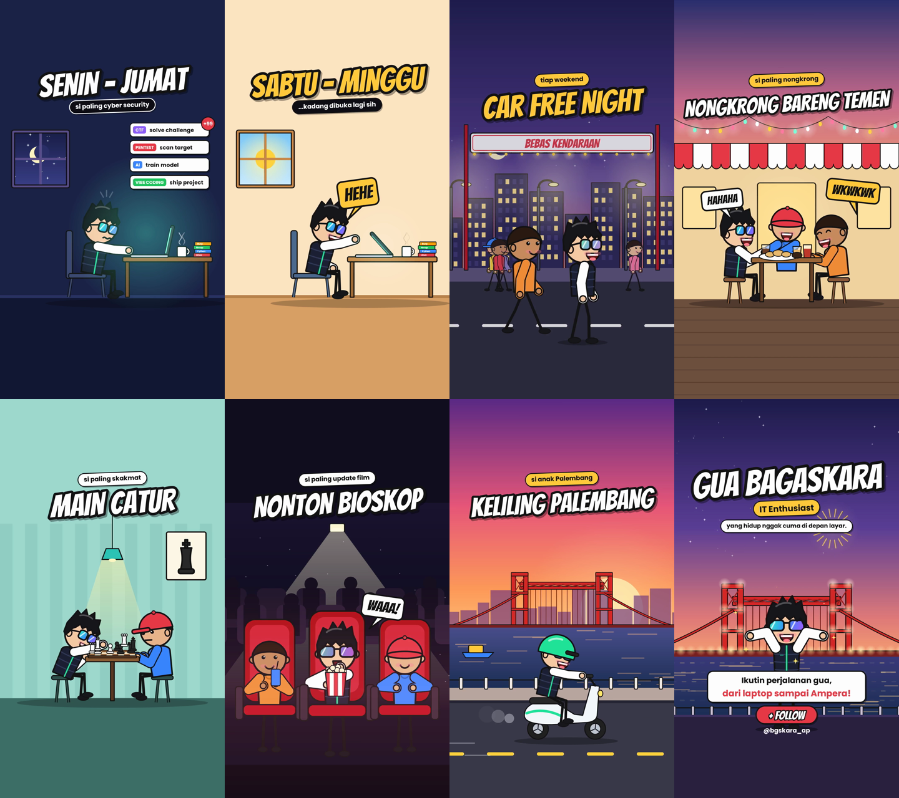

Membuat Animasi AI dengan Claude Code, Gemini, & Antigravity
Catatan belajar dan blueprint produksi animasi 2D prosedural untuk Instagram Reels tanpa software editing video konvensional. Seluruh visual, gerak karakter, hingga musik latar digambar dan disintesis murni lewat kode program.
Sinergi Tripartit AI
Animasi ini tidak dihasilkan dari tool generator otomatis "sekali klik", melainkan orkestrasi tiga pilar kecerdasan buatan dengan keahlian khusus di tiap lapisan produksi.
Google Gemini
Director & Visual Consistency Anchor
- Naskah & Timing: Merumuskan script voiceover dengan pacing Reels yang dinamis dan gaul.
- Konsistensi Karakter: Memastikan identitas visual Bagaskara (hoodie, celana, postur, kamar tidur) konsisten antar adegan.
- B-Roll & Storyboard: Menghasilkan acuan visual pencahayaan, sudut kamera, dan storyboard 8 adegan.
Claude Code
Algorithmic Animator & Audio Synthesizer
- PyCairo 2D Engine: Mengubah konsep visual menjadi formula vektor murni sebagai fungsi waktu $f(t)$.
- Inverse Kinematics (IK): Menghitung sudut sendi bahu dan siku lengan 2-tulang secara otomatis dengan Hukum Cosinus.
- Sintesis Audio NumPy: Menghasilkan akor musik lo-fi (Fmaj7–G7–Em7–Am7) dan efek suara SFX tanpa aset eksternal.
Google Antigravity
Autonomous Agent & Platform Guard
- Agentic Orchestration: Mengatur sub-agent, otomatisasi render paralel, dan manajemen pipeline pipeline otonom.
- Remotion Video-as-Code: Mengintegrasikan komponen React-based video untuk transisi berbasis kurva pegas (Spring easing).
- Safe-Zone & Audio Sync: Memvalidasi area aman Reels 9:16 vs Feed 4:5 serta menyelaraskan timestamp ucapan (WordBoundary).
Prinsip Inti: AI bertindak sebagai rekan kerja dan amplifier logika teknis. Keputusan artistik, ritme penceritaan, serta identitas lokal (khas Palembang & mahasiswa IT) tetap dipegang penuh oleh kreator manusia.
Storyboard & Breakdown Adegan
Mengangkat tema tren "Senin–Jumat vs Weekend" tentang mahasiswa IT di Palembang: ngoprek cyber security, AI, dan vibe coding di hari kerja, lalu menikmati hidup di luar layar saat akhir pekan.

| Waktu | Adegan | Aksi Karakter & Visual | SFX & Musik |
|---|---|---|---|
| 0:00 – 0:08 | Senin – Jumat | Karakter ngoding larut malam, kartu notifikasi CTF & AI bermunculan hingga +99, keringat dingin. | Lo-fi drum minimal, SFX pop beruntun, alert ding. |
| 0:08 – 0:13 | Sabtu – Minggu | Laptop ditutup dengan lega... lalu sedikit diintip kembali. Muncul gelembung HEHE. | Suara tutupan laptop, akor arpeggio weekend menyala. |
| 0:13 – 0:19 | Car Free Day → Night | Berjalan santai bersama teman. Transisi langit siang menjadi malam, lampu kota menyala. | Bassline ceria, SFX whoosh transisi wipe miring. |
| 0:19 – 0:22 | Nongkrong Warkop | Menikmati pempek dan es teh di bawah lampu gantung warkop khas Palembang. Teks WKWKWK. | Akor hangat, suara seruput santai. |
| 0:22 – 0:25 | Main Catur | Karakter berpikir taktis, tangan bergerak dengan IK mengangkat ratu: SKAKMAT! Raja lawan roboh. | SFX ketukan kayu catur tegap, bell ding. |
| 0:25 – 0:28 | Nonton Bioskop | Santai makan popcorn di bioskop gelap, mendadak adegan horor (jumpscare): popcorn terlempar. | SFX jumpscare dramatis, bunyi tumpahan renyah. |
| 0:28 – 0:32 | Keliling Palembang | Mengendarai skuter matic di tepian Sungai Musi dengan latar megah Jembatan Ampera. | Deru mesin skuter halus, angin sore. |
| 0:32 – 0:42 | Penutup (Ampera) | Ampera malam dengan kembang api, kartu identitas IT Enthusiast, ajakan follow @bgskara_ap. | SFX kembang api boom, musik klimaks lalu fade-out. |
Bedah Logika & Skrip Kode
Empat implementasi teknis kunci yang memungkinkan video berkualitas tinggi dirender cepat dengan efisiensi memori maksimal.
def ik(sh, tg, l1, l2, elbow='down'):
"""
Menghitung sudut sendi bahu (a1) dan siku (a2) secara analitik
sehingga ujung tangan menyentuh target 'tg' secara natural.
"""
dx, dy = tg[0] - sh[0], tg[1] - sh[1]
d = math.hypot(dx, dy)
d = clamp(d, abs(l1 - l2) + 1, l1 + l2 - 0.5)
phi = ang_of(dx, dy)
# Perhitungan sudut siku via Hukum Cosinus: c^2 = a^2 + b^2 - 2ab*cos(C)
c = clamp((l1 * l1 + d * d - l2 * l2) / (2 * l1 * d), -1, 1)
al = math.degrees(math.acos(c))
best = None
for a1 in (phi + al, phi - al):
ex, ey = sh[0] + l1 * vdir(a1)[0], sh[1] + l1 * vdir(a1)[1]
a2 = ang_of(tg[0] - ex, tg[1] - ey)
key = ey if elbow == 'down' else -ey
if best is None or key > best[0]:
best = (key, a1, a2)
return best[1], best[2]# Progresi Akor: Fmaj7 - G7 - Em7 - Am7 pada tempo 100 BPM
chords = [[53, 57, 60, 64], [55, 59, 62, 65], [52, 55, 59, 62], [57, 60, 64, 67]]
roots = [41, 43, 40, 45]
for b in range(nb):
t0 = b * bar
ch = chords[b % 4]
n = int(bar * SR)
tt = np.arange(n) / SR
# Pad harmonis dengan gelombang sinus berlapis dan detune halus (1.003x)
pad = sum(np.sin(2 * np.pi * nf(m) * tt) + 0.4 * np.sin(2 * np.pi * nf(m) * 1.003 * tt) for m in ch)
pad *= np.minimum(tt / 0.3, 1) * np.minimum((bar - tt) / 0.3, 1)
add(pad, t0, 0.035)
# Efek Suara Ding Matematis
def sfx_ding():
n = int(1.2 * SR); t = np.arange(n) / SR
return (np.sin(2*np.pi*1318*t) + 0.5*np.sin(2*np.pi*2637*t) + 0.3*np.sin(2*np.pi*1975*t)) * env(n, 0.002, 0.35) * 0.3# Membuka subproses FFmpeg yang membaca frame langsung dari stdin
p = subprocess.Popen([
'ffmpeg', '-v', 'error', '-y', '-f', 'rawvideo', '-pix_fmt', 'bgra',
'-s', f'{W}x{H}', '-r', str(FPS), '-i', '-',
'-c:v', 'libx264', '-crf', '18', '-preset', 'veryfast',
'-pix_fmt', 'yuv420p', '-r', str(FPS), tmp
], stdin=subprocess.PIPE)
s = cairo.ImageSurface(cairo.FORMAT_ARGB32, W, H)
for f in range(f0, f1):
c = cairo.Context(s)
c.set_source_rgb(0, 0, 0); c.paint()
frame(c, f / FPS) # Menggambar adegan pada waktu f / FPS
s.flush()
p.stdin.write(bytes(s.get_data())) # Streaming byte langsung ke stdin FFmpeg
p.stdin.close()# Deteksi energi suara narator untuk auto-ducking musik latar
e = np.abs(vo)
k = int(0.15 * SR)
e = np.convolve(e, np.ones(k) / k, mode='same')
e = np.clip(e / 0.08, 0, 1)
# Reduksi musik sebesar 50% selama pembicara bersuara
out = (out / np.max(np.abs(out))) * 0.6 * (1.0 - 0.5 * e) + (vo * 0.85)
# FFmpeg loudnorm sesuai standar Instagram Reels (-14 LUFS, True Peak -1.5)
# ffmpeg -i audio_mix.wav -af "loudnorm=I=-14:TP=-1.5:LRA=11" audio_final.wavKepatuhan Safe Zone Reels (9:16 vs 4:5)
Mengapa teks tidak boleh ditaruh sembarangan di canvas vertikal.
Resolusi Penuh (9:16)
1080 × 1920 piksel untuk penayangan penuh di tab Instagram Reels.
Area atas sering tertutup tombol back dan audio judul. Area bawah tertutup caption dan username.
Crop Feed & Grid (4:5)
1080 × 1350 piksel saat video muncul di feed utama pengguna.
Bagian atas terpotong 285 piksel dan bawah terpotong 285 piksel. Semua teks inti wajib berada di tengah!
Formula Safe Zone
Y-Min: 285 px • Y-Max: 1635 px
Semua chip status, notifikasi, dan watermark diletakkan di dalam batas ini agar selalu terbaca utuh di kedua format.
5 Pelajaran Berharga
Rangkuman pengalaman nyata dari iterasi v1 hingga rilis final siap tayang.
Animasi Adalah Fungsi Waktu Murni
Dengan membuat setiap frame dihitung dari variabel waktu t murni, revisi satu adegan tidak pernah merusak adegan lain. Render dapat diparalelkan di CPU multi-core tanpa overhead memori.
IK Menghemat Waktu Rigging 90%
Mengatur rotasi bahu dan siku secara manual membuat animasi patah-patah. Dengan Inverse Kinematics dua tulang, kita cukup menetapkan target koordinat tangan, dan siku akan menekuk otomatis.
Audio Menentukan 50% Kualitas
Video visual terbaik sekalipun akan terasa amatir jika volumenya tidak seimbang. Auto-ducking dan normalisasi loudness ke -14 LUFS membuat suara jernih dan nyaman didengar di smartphone.
Voiceover Asli Mengalahkan TTS AI
Meski telah bereksperimen dengan model Piper TTS dan vocoder pitch shifting, rekaman suara asli manusia tetap memiliki emosi, jeda alami, dan artikulasi bahasa gaul Palembang yang belum bisa ditandingi AI offline.
Arsitektur Video-as-Code Sangat Tangguh
Menggabungkan Claude Code (logika matematika), Gemini (arahan visual), dan Antigravity (orkestrasi agentic) membuktikan bahwa video kartun berkualitas tinggi dapat diproduksi secara otonom dan bersih tanpa software berat.
Transparansi Deployment & Pembersihan File Animasi:
Sesuai instruksi pengembangan, file video hasil render .mp4 berukuran besar sengaja dihapus dari repositori setelah proses deployment berhasil. Hal ini menjaga agar repositori tetap ringan, terhindar dari batas ukuran Git LFS, dan memastikan fokus utama ada pada dokumentasi pembelajaran, logika matematika, serta reproduktibilitas kode bagi rekan-rekan pengembang.